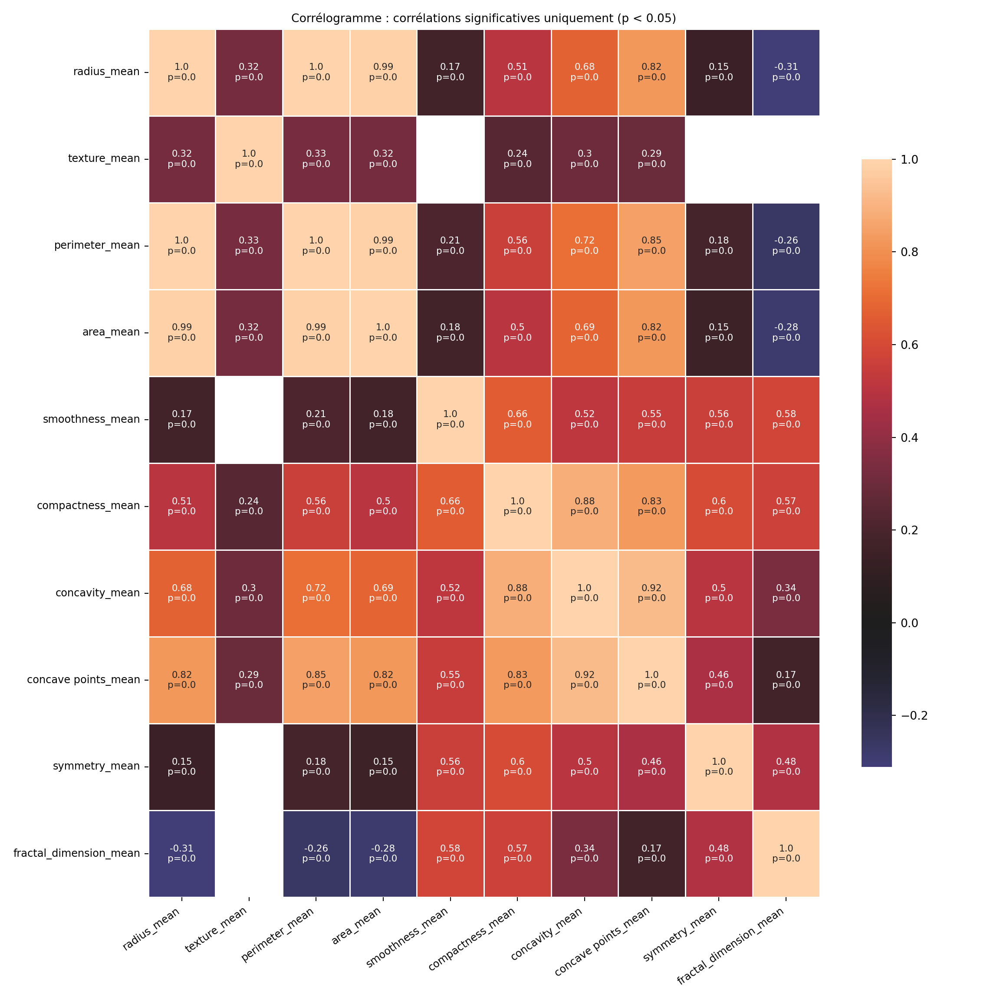

Analyse statistique et apprentissage automatique pour la classification des tumeurs mammaires : étude de la régression logistique suivie d’une comparaison entre modèles logit et KNN
Résumé / Abstract
Dans cet article, nous étudions la classification des tumeurs mammaires à partir d’un jeu de données biomédical déséquilibré, en combinant des approches statistiques et d’apprentissage automatique. Une analyse exploratoire incluant une analyse en composantes principales (ACP) a permis de réduire la dimensionnalité tout en préservant la structure des données, validée par une classification non supervisée par KMeans. Une modélisation statistique par régression logistique pondérée a ensuite mis en évidence deux variables fortement prédictives : le périmètre moyen et le nombre moyen de points concaves, avec des odds ratios respectifs de 9,7 et 25,0.
Dans une seconde phase, deux modèles supervisés — la régression logistique et le K plus proches voisins (KNN) — ont été comparés après sélection rigoureuse des variables. La régression logistique s’est révélée plus performante en termes de robustesse, de capacité de généralisation et de discrimination (AUC = 0,98), tandis que le KNN a offert un bon compromis entre précision et rappel. Enfin, nous suggérons que pour des objectifs purement prédictifs, des modèles plus complexes comme XGBoost pourraient être envisagés, au prix d’une interprétabilité réduite.
Mots-clés : Analyse en composantes principales, Sélection de variables, K-plus proches voisins, Régression logistique, k-means, Classification, Données médicales, Tumeurs mammaires
In this study, we address the classification of breast tumors using a highly imbalanced biomedical dataset, combining statistical methods and machine learning techniques. An exploratory analysis including Principal Component Analysis (PCA) was used to reduce dimensionality while preserving data structure, which was validated through unsupervised clustering with KMeans. A weighted logistic regression model identified two major predictors: mean perimeter and mean number of concave points, with odds ratios of 9.7 and 25.0, respectively.
In the second phase, two supervised models — logistic regression and k-nearest neighbors (KNN) — were compared following rigorous variable selection. Logistic regression demonstrated superior robustness, generalization ability, and discriminative power (AUC = 0.98), while KNN offered a strong balance between precision and recall. For purely predictive applications, we recommend exploring more complex models such as XGBoost, which may increase accuracy at the cost of interpretability.
Keywords: Principal Component Analysis, Variable Selection, K-Nearest Neighbours, Logistic Regression, k-means, Classification, Medical Data, Breast Tumors.
Introduction
Le cancer représente aujourd’hui l’une des principales causes de morbidité et de mortalité dans le monde. Selon les estimations GLOBOCAN 2020, près de 19,3 millions de nouveaux cas de cancer et 10 millions de décès liés à cette maladie ont été enregistrés à l’échelle mondiale en 2020 (Sung et al. 2021). Cette charge devrait atteindre 28,4 millions de nouveaux cas d’ici 2040, soit une augmentation de 47 %, avec une progression particulièrement marquée dans les pays en développement.
Le cancer du sein a désormais dépassé le cancer du poumon comme cancer le plus fréquemment diagnostiqué dans le monde, avec 2,3 millions de nouveaux cas en 2020 (soit 11,7 % de l’ensemble des cancers). Il constitue également l’une des principales causes de décès par cancer chez la femme, avec environ 685 000 décès en 2020, soit 6,9 % des décès par cancer (Organization 2021; Sung et al. 2021). Cette prévalence élevée, associée à une forte létalité dans les pays à ressources limitées, fait du cancer du sein un enjeu majeur de santé publique mondiale.
Les inégalités géographiques sont notables : alors que l’incidence du cancer du sein est plus élevée dans les pays industrialisés, les taux de mortalité y sont généralement plus faibles, grâce à une détection précoce et à une meilleure prise en charge. À l’inverse, dans de nombreux pays en transition, le diagnostic est souvent posé à un stade avancé, expliquant des taux de mortalité proportionnellement plus élevés (Sung et al. 2021).
Dans ce contexte, il devient essentiel de mieux comprendre les facteurs explicatifs de la malignité des tumeurs mammaires afin de guider les stratégies de dépistage, de prévention et de traitement. L’analyse de données cliniques et la modélisation statistique peuvent contribuer à cet objectif en identifiant des variables discriminantes et en développant des modèles prédictifs robustes.
C’est dans cette perspective que s’inscrit ce travail, qui poursuit deux objectifs complémentaires :
Identifier les variables cliniques les plus explicatives du caractère bénin ou malin d’une tumeur mammaire;
Ajuster un modèle de machine learning capable de prédire efficacement la nature de la tumeur à partir de ces variables.
En atteignant ces objectifs, notre démarche vise à renforcer l’applicabilité des outils prédictifs dans un cadre médical, tout en assurant une meilleure compréhension des dimensions sous-jacentes à la classification tumorale.
Matériels et Méthododes
1. Données utilisées
L’étude s’appuie sur le jeu de données Wisconsin Breast Cancer Diagnostic (WBCD), mis à disposition par l’Université du Wisconsin sur kaggle (Wolberg, W.H., et al., 1995). Il contient 569 observations issues d’analyses de prélèvements mammaires, chacune décrite par 30 variables numériques mesurant des caractéristiques morphologiques des noyaux cellulaires (moyenne, écart-type et valeur extrême de la texture, surface, concavité, etc.). La variable cible est binaire et indique si la tumeur est maligne (M) ou bénigne (B).
2. Prétraitement des données
Les étapes suivantes ont été réalisées :
Suppression de l’identifiant non informatif (id),
filtrage des variables : seules les mesures de moyenne (se terminant par _mean) ont été retenues pour l’analyse initiale;
standardisation : toutes les variables ont été centrées et réduites afin d’éviter que leur échelle influence les analyses;
vérification de la complétude : le jeu de données ne contient pas de valeurs manquantes.
3. Analyse en Composantes Principales (ACP)
Une ACP a été effectuée sur les variables normalisées afin de réduire la dimensionnalité tout en préservant l’information maximale (Jolliffe and Cadima 2016; Abdi and Williams 2010). Les deux premières composantes principales ont été retenues car elles expliquent ensemble plus de 80% de la variance totale.
L’ACP a permis de :
visualiser les individus dans un plan factoriel 2D (tumeur maligne vs bénigne);
étudier la structure des variables à l’aide du cercle des corrélations;
identifier les variables les plus contributives à l’axe de séparation entre les deux classes;
Cette étape a aussi guidé la sélection finale des variables explicatives, en complément des tests statistiques.
4. Classification non supervisée par K-Means
Afin d’analyser la structure intrinsèque des données, une classification non supervisée a été réalisée à l’aide de l’algorithme K-Means (MacQueen 1967). Le nombre de clusters a été fixé à k = 2, en cohérence avec les deux catégories diagnostiques.
L’algorithme a été appliqué sur les composantes principales issues de l’ACP, ce qui présente deux avantages :
réduction du bruit (moins de dimensions);
visualisation claire des regroupements.
Les clusters obtenus ont ensuite été comparés aux vraies classes pour évaluer le pouvoir de séparation naturelle des données. Cette approche permet aussi de valider la pertinence des axes factoriels retenus dans l’ACP.
5. Sélection des variables explicatives
Une série de tests statistiques a été conduite pour identifier les variables présentant une différence significative entre les tumeurs bénignes et malignes :
Normalité des variables testée via le test de Shapiro-Wilk;
Homogénéité des variances testée avec le test de Levene;
Choix du test de comparaison approprié (ANOVA ou test de Kruskal-Wallis);
Calcul de l’indice \(\eta^2\) (eta squared) pour estimer la proportion de variance expliquée.
6. Modélisation statistique - Regression logistique
La régression logistique binaire a été utilisée pour estimer la probabilité qu’une tumeur soit maligne en fonction des variables explicatives sélectionnées (Hosmer, Lemeshow, and Sturdivant 2013). Ce modèle statistique repose sur la relation log-linéaire entre les covariables et le logit de la probabilité d’appartenir à la classe maligne.
L’un des avantages majeurs de la régression logistique réside dans son interprétabilité : chaque coefficient estimé peut être interprété comme un effet multiplicatif sur les odds de malignité. Ainsi, une variable avec un coefficient positif augmente la probabilité qu’une tumeur soit maligne, et inversement pour un coefficient négatif.
Les résultats du modèle permettent non seulement de classifier les tumeurs, mais aussi d’identifier les facteurs les plus associés à la malignité, ce qui offre une lecture médico-biologique utile.
7. Modélisation supervisé : Machine Learnig
7.1 Modèles utilisés
Afin de comparer les approches classiques et les méthodes d’apprentissage automatique, deux modèles ont été entraînés pour la prédiction du type de tumeur :
Régression logistique (appliquée ici comme algorithme de machine learning) (Hosmer, Lemeshow, and Sturdivant 2013),
K-plus proches voisins (K-NN) avec \(k = 5\) (Cover and Hart 1967).
Le jeu de données a été aléatoirement divisé en deux sous-ensembles :
Entraînement : 80 % des données,
Test : 20 % des données.
7.2 Régression logistique (Machine Learning)
Le modèle de régression logistique a été ajusté sur l’échantillon d’apprentissage, en prenant en compte les variables préalablement sélectionnées. L’entraînement a permis d’identifier les variables les plus influentes sur le score de prédiction, tout en conservant une bonne capacité généralisable sur les données de test.
Les performances ont été évaluées à l’aide de l’aire sous la courbe ROC (AUC), du rappel, de la précision et du F1-score.
7.3 K-plus proches voisins (K-NN)
Le modèle K-NN classe une observation en fonction des classes majoritaires de ses k voisins les plus proches (Cover and Hart 1967). Le choix du paramètre k = 2 a été déterminé via validation croisée sur l’échantillon d’apprentissage.
La distance euclidienne a été utilisée comme métrique de proximité. Un soin particulier a été apporté pour éviter le surapprentissage, en équilibrant biais et variance lors de l’optimisation du modèle.
8. Évaluation des performances
Le modèle de régression logistique statistique a été évalué à l’aide des tests de significativité des coefficients, ainsi que de la qualité de l’ajustement global.
Quant aux modèles de machine learning, ils ont été évalués sur l’échantillon test selon plusieurs indicateurs de performance :
Exactitude (Accuracy): proportion globale de bonnes classifications,Précision (Precision): proportion de vraies tumeurs malignes parmi les prédictions positives,Rappel (Recall): proportion de vraies tumeurs malignes correctement détectées,F1-score: compromis entre précision et rappel,AUC-ROC: mesure de la performance globale du modèle pour discriminer les deux classes.
Ces métriques permettent une comparaison objective des performances et de la robustesse des modèles utilisés.
L’ACP est faite en amont pour éviter la multicolinéarité et améliorer la robustesse des modèles.
Le clustering permet de découvrir la structure latente des données avant la classification.
Exploration des données
L’exploration des données comprend :
- Le résumé statistique descriptif des variables
- La distribution de la variable cible
- L’étude des corrélations entre variables
Ces étapes permettent de mieux comprendre la structure et les caractéristiques de la base avant modélisation.
Résultats
Description des variables
Les variables de cette base sont construites à partir de l’analyse de noyaux de cellules détectés dans des images médicales.
id(int) : Identifiant unique de l’observation (patient).diagnosis(catégorielle) Variable cible binaire :M : Malignant (maligne)
B : Benign (bénigne)
Caractéristiques mesurées
Pour chaque noyau de cellule, 10 mesures statistiques ont été calculées, puis la moyenne, l’écart-type (erreur standard, noté se), et la valeur extrême (worst) ont été rapportés :
Mesures de base :
Ces mesures sont disponibles en 3 versions chacune : .mean, .se, .worst
| Variable de base | Signification |
|---|---|
radius |
Rayon moyen du noyau |
texture |
Écart-type des valeurs de niveaux de gris |
perimeter |
Périmètre du noyau |
area |
Surface du noyau |
smoothness |
Régularité des contours (valeurs faibles = plus lisses) |
compactness |
Compacité = (périmètre² / surface) - 1.0 |
concavity |
Gravité des concavités dans les contours |
concave points |
Nombre de points concaves sur les contours |
symmetry |
Symétrie de la cellule |
fractal dimension |
Mesure de la “rugosité” des contours |
Chaque mesure est donc déclinée en :
*_mean*_se*_worst
Par exemple :
radius_mean,radius_se,radius_worsttexture_mean,texture_se,texture_worst…
fractal_dimension_mean,fractal_dimension_se,fractal_dimension_worst
Ce qui donne au total 30 variables quantitatives.
Résumé des types de variables
| Type de variable | Nom | Nombre |
|---|---|---|
| Identifiant | id |
1 |
| Cible binaire | diagnosis |
1 |
| Variables numériques (×10 mesures ×3 stats) | *_mean, *_se, *_worst |
30 |
Analyse de données
Analyse exploratoire
- Quelques statistiques descriptives
- Distribution des variables
Ce graphique illustre la distribution des variables explicatives. On observe une hétérogénéité d’échelle importante entre les différentes variables, ce qui justifie l’application préalable d’une standardisation (centrage-réduction) avant toute analyse multivariée ou modélisation.
Par ailleurs, la distribution de la variable réponse révèle un déséquilibre notable entre les classes : la proportion de tumeurs bénignes est environ deux fois inférieure à celle des tumeurs malignes. Ce déséquilibre pourrait influencer les performances de certains modèles de classification, en particulier ceux sensibles à la distribution des classes, et devra être pris en compte dans l’évaluation.
- Corrélogramme des variables quantitatives
(array([0.5, 1.5, 2.5, 3.5, 4.5, 5.5, 6.5, 7.5, 8.5, 9.5]), [Text(0.5, 0, 'radius_mean'), Text(1.5, 0, 'texture_mean'), Text(2.5, 0, 'perimeter_mean'), Text(3.5, 0, 'area_mean'), Text(4.5, 0, 'smoothness_mean'), Text(5.5, 0, 'compactness_mean'), Text(6.5, 0, 'concavity_mean'), Text(7.5, 0, 'concave points_mean'), Text(8.5, 0, 'symmetry_mean'), Text(9.5, 0, 'fractal_dimension_mean')])(array([0.5, 1.5, 2.5, 3.5, 4.5, 5.5, 6.5, 7.5, 8.5, 9.5]), [Text(0, 0.5, 'radius_mean'), Text(0, 1.5, 'texture_mean'), Text(0, 2.5, 'perimeter_mean'), Text(0, 3.5, 'area_mean'), Text(0, 4.5, 'smoothness_mean'), Text(0, 5.5, 'compactness_mean'), Text(0, 6.5, 'concavity_mean'), Text(0, 7.5, 'concave points_mean'), Text(0, 8.5, 'symmetry_mean'), Text(0, 9.5, 'fractal_dimension_mean')])
Une analyse des corrélations entre les variables explicatives montre que certaines variables sont fortement corrélées entre elles, tandis que d’autres présentent des corrélations plus faibles. Toutefois, une simple observation graphique ne permet pas de conclure sur la significativité statistique de ces associations.
Pour approfondir cette analyse, un matrice de corrélations de pearson annotée avec les p-values a été utilisée. Cela permet de distinguer :
les corrélations statistiquement significatives,
des associations qui, bien que visuellement marquées, ne sont pas significatives au seuil de 5%,
ainsi que des variables non corrélées entre elles, mais corrélées à d’autres.
Cette redondance entre variables justifie pleinement le recours à une analyse en composantes principales (
ACP).
Analyse en composantes principales
Pour cette partie spéciquement ainsi que pour la partie statistique du modèle logistique, nous utiliserons le langage R au lieu de python car il est plus facile à prendre en main (avis personnel). Mais pour la partie machine learning nous utiliserons le langage Python.
L’ ACP permettra d’éliminer les variables corrélées entre elles en ne gardant que les plus contributives à la formation des axes que nous choisirons (pour plus de détails visitez ma publication Reduction de dimensionnalité, clustering non supervisé).
Les deux premiers axes factoriels ont été sélectionné car ceux-ci permettent de conserver plus de 80% de l’information contenue dans les données (voir annexe 1).
- Analyses des variables

Cette figure met en évidence les principales relations entre les variables dans le plan des premières composantes principales. Elle permet de formuler plusieurs observations importantes :
La variable
texture_meanapparaît comme la moins contributive. Elle présente une très faible corrélation avec les composantes principales retenues, ce qui indique qu’elle n’apporte pas d’information significative pour la séparation entre les groupes.Les variables
radius_mean,area_meanetperimeter_meansont très fortement corrélées entre elles. Elles contribuent de manière presque équivalente à la construction des axes principaux de l’analyse. Cette redondance est attendue, car ces variables décrivent toutes la taille du noyau de la cellule, selon des relations géométriques bien établies :\[ \text{Périmètre} \approx 2\pi \times \text{Rayon}, \quad \text{Aire} \approx \pi \times \text{Rayon}^2 \]
Ces relations expliquent que ces trois variables transmettent une information similaire. Pour éviter la redondance, il est judicieux de n’en conserver qu’une seule dans les analyses ultérieures.
Les variables
smoothness_meanetsymmetry_meansont corrélées, maissmoothness_meanse distingue par une contribution plus forte à l’analyse. Elle décrit la régularité des contours, un critère pertinent pour la caractérisation morphologique, tandis quesymmetry_meanapporte une information redondante et de moindre poids explicatif.Les variables
concavity_meanetconcave points_meansont également corrélées. Toutefois,concave points_meanest retenue car elle contribue davantage à la structure globale révélée par l’ACP. Ces variables sont liées à la présence d’irrégularités dans les contours cellulaires, souvent caractéristiques des tumeurs malignes.D’autres variables, comme
compactness_mean,fractal_dimension_meanetsmoothness_mean, apportent des informations complémentaires. Par exemple :compactness_meanexprime le rapport entre la surface et le périmètre, donc la forme générale,fractal_dimension_meanmesure la complexité des contours, et reflète l’irrégularité des bords.
Bien que certaines variables soient corrélées, elles capturent des aspects distincts de la morphologie des noyaux. Cela justifie leur présence dans une approche multivariée.
Sélection de variables redondantes : cas de radius_mean, area_mean et perimeter_mean
Pour choisir entre les variables radius_mean, area_mean et perimeter_mean, qui sont fortement corrélées, une procédure rigoureuse de sélection est mise en place, fondée sur l’analyse de la variance (ANOVA). Avant d’appliquer ce test, deux conditions doivent être vérifiées :
- Normalité des données dans chaque groupe (
BetM) via le test de Shapiro-Wilk. - Homogénéité des variances entre les groupes via le test de Levene.
En fonction des résultats, le test statistique approprié est sélectionné :
Si les deux conditions sont remplies, une ANOVA classique est appliquée.
Si les données sont normales mais les variances sont différentes, on utilise l’ANOVA de Welch.
En cas de non-normalité, un test non paramétrique est privilégié :
Wilcoxon-Mann-Whitney pour deux groupes,
ou Kruskal-Wallis pour plus de deux groupes.
Ce processus a été automatisé à l’aide d’une fonction personnalisée. Les détails des tests (Shapiro-Wilk, Levene et choix final) sont présentés en annexe.
Une analyse statistique a été menée pour évaluer si certaines variables différencient significativement les tumeurs bénignes des tumeurs malignes. Les tests de normalité (par groupe), les tests d’homogénéité de variances, ainsi que le test non paramétrique de Wilcoxon-Mann-Whitney ont été appliqués pour cela.
Concernant la variable radius_mean, les tests de normalité indiquent une distribution non normale, notamment pour le groupe M (p = 0.0019), et le test de Levene rejette l’hypothèse d’homogénéité des variances (p = 0). Le test de Wilcoxon-Mann-Whitney donne un p-value de 0, indiquant une différence significative entre les distributions des deux groupes. On conclut donc que radius_mean permet de distinguer les tumeurs selon leur nature.
De même, pour area_mean, la normalité n’est pas respectée dans les deux groupes(p = 0.0228 pour B, et p = 0 pour M), les variances ne sont pas homogènes (p = 0), et le test de Wilcoxon-Mann-Whitney rejette également l’égalité des distributions entre les groupes (p = 0). Cette variable est donc statistiquement discriminante.
Enfin, perimeter_mean présente aussi une non-normalité pour le groupe M (p = 4e-04) et des variances inégales (p = 0). Le test de Wilcoxon conclut à une différence significative des distributions entre les deux types de tumeurs.
Ces résultats soutiennent l’idée que ces trois variables contribuent de manière significative à la séparation entre tumeurs bénignes et malignes, et justifient leur inclusion dans les étapes de sélection des variables explicatives.
Cependant, ces variables sont fortement corrélées entre elles (\(r > 0.95\)). Une telle redondance peut induire des problèmes de multicolinéarité dans les modèles statistiques ou de machine learning, rendant l’interprétation des coefficients difficile et dégradant la performance prédictive.
Pour remédier à cela, nous proposons de sélectionner une seule variable représentative parmi ces variables fortement corrélées. Le critère retenu est le rapport de corrélation avec la variable cible (diagnosis). Ainsi, parmi les variables redondantes, nous conservons celle ayant la plus forte corrélation absolue avec la classe à prédire. Ce choix permet de maximiser la contribution informative tout en éliminant les doublons.
radius_mean: \(\eta^2 = 0{,}5329416\)
area_mean: \(\eta^2 = 0{,}5026581\)
perimeter_mean: \(\eta^2 = 0{,}5515075\)
Nous retenons donc perimeter_mean, qui présente le rapport de corrélation le plus élevé avec la variable réponse.
Variables sélectionnées
Les variables retenues pour l’analyse finale sont :
perimeter_mean: mesure de la taille du noyau,smoothness_mean: régularité des contours,fractal_dimension_mean: complexité des bords,concave points_mean: présence de concavités.Conclusion partielle
L’analyse en composantes principales (ACP) a mis en évidence des groupes de variables fortement corrélées, traduisant des caractéristiques géométriques proches. Afin d’éviter la redondance d’information et les effets de multicolinéarité, nous avons conservé, pour chaque groupe, la variable la plus représentative.
Cette sélection permet de construire un modèle plus parcimonieux, tout en conservant des dimensions complémentaires — liées à la forme, la texture ou la complexité morphologique — essentielles à une bonne discrimination des types de tumeurs.
Les Kmeans

Comme les deux premières composantes principales expliquent plus de 80 % de la variance totale, nous les retenons pour la suite de l’analyse. Cette réduction de dimension permet de conserver l’essentiel de l’information tout en facilitant la visualisation et les analyses ultérieures.
Dans le cadre de la classification non supervisée, nous appliquons ensuite l’algorithme K-Means avec un nombre de clusters fixé à 2, en cohérence avec la nature binaire de la variable réponse (diagnosis). L’objectif est d’évaluer si les observations peuvent être regroupées automatiquement en deux groupes distincts, reflétant ou non la distinction entre tumeurs bénignes et malignes.
La classification K-Means appliquée aux deux premières composantes principales permet une séparation relativement nette des observations en deux groupes.
Le tableau ci-dessous présente la répartition des observations selon les clusters identifiés par l’algorithme K-Means et leur étiquette réelle (diagnosis).
| Cluster | Bénigne (B) | Maligne (M) |
|---|---|---|
| 1 | 8 | 163 |
| 2 | 349 | 49 |
On observe que :
Cluster 1 est majoritairement composé de tumeurs malignes (163 cas M contre 8 cas B), ce qui suggère que ce groupe correspond essentiellement aux observations de type malin.
Cluster 2 regroupe principalement des tumeurs bénignes (349 cas B contre 49 cas M), ce qui permet de l’associer globalement à la classe bénigne.
Cette séparation indique que la structure latente des données, projetée dans le sous-espace factoriel, permet déjà une discrimination naturelle entre les deux types de tumeurs, sans supervision. Cela renforce l’idée que les variables sélectionnées sont pertinentes pour la classification.
Représentations graphiques
Sur cette figure On observe que les patients sont pratiquement linéairement séparables dans le plan défini par les deux premières composantes principales.
Cela signifie que la projection sur ces deux dimensions met bien en évidence une séparation claire entre les deux groupes (bénins et malins), ce qui est cohérent avec la qualité du clustering obtenu par k-means.
Cette bonne séparation visuelle corrobore la pertinence des variables sélectionnées et confirme que les composantes principales résument efficacement la variance utile à la distinction des diagnostics. Nous pouvons passer à présent aux différents modèles de prédiction (regression logistique et k plus plus proches voisins)
Influence des caractéristiques tumorales sur le diagnostic : quelle importance pour chaque variable ?
Pour répondre à cette question, nous avons procédé à une modélisation statistique à l’aide d’une régression logistique classique. Les variables explicatives ont été standardisées (centrées et réduites) afin de faciliter la comparaison de leurs effets respectifs et de stabiliser l’estimation des coefficients. Cette standardisation permet une interprétation relative : un coefficient traduit alors l’effet d’une variation d’un écart-type de la variable sur la probabilité d’un diagnostic malin. Toutefois, cela rend l’interprétation directe dans l’unité d’origine moins intuitive.
Par ailleurs, la variable cible diagnosis présente un déséquilibre important : les cas bénins (B) sont nettement plus nombreux que les cas malins (M). Ce déséquilibre peut induire un biais dans l’apprentissage, poussant le modèle à privilégier la classe majoritaire, au détriment de la détection des cas malins, pourtant critiques sur le plan médical.
Pour corriger ce biais, nous avons introduit une pondération des observations dans le modèle logistique. Plus précisément, chaque observation de la classe minoritaire (M) a reçu un poids proportionnel au rapport entre les proportions des classes dans l’échantillon.
Cette stratégie permet d’obtenir un modèle plus équitable dans sa capacité à prédire correctement les deux types de tumeurs, en particulier les cas malins qui constituent l’enjeu principal de détection dans un contexte médical.
| Characteristic | OR | 95% CI | p-value |
|---|---|---|---|
| (Intercept) | 0.97 | 0.71, 1.34 | 0.9 |
| perimeter_mean | 9.64 | 3.43, 28.9 | <0.001 |
| smoothness_mean | 1.19 | 0.70, 2.05 | 0.5 |
| fractal_dimension_mean | 0.77 | 0.46, 1.26 | 0.3 |
| concave points_mean | 25.1 | 8.38, 82.0 | <0.001 |
| Abbreviations: CI = Confidence Interval, OR = Odds Ratio | |||
Interprétation :
Nous avons ajusté un modèle de régression logistique sur les variables standardisées en tenant compte du déséquilibre entre les classes grâce à une pondération.
Une augmentation d’un écart-type du périmètre moyen (
perimeter_mean) multiplie par environ 9.7 les chances d’avoir un diagnostic malin, ce qui est très significatif (p < 0.001).Une augmentation d’un écart-type du nombre moyen de points concaves (
concave points_mean) multiplie par environ 25.0 les chances d’avoir un diagnostic malin, indiquant un effet très fort et hautement significatif (p < 0.001).Les variables lissage moyen (
smoothness_mean) et dimension fractale moyenne (fractal_dimension_mean) n’ont pas d’effet significatif sur le diagnostic, leurs odds ratios étant proches de 1 et leurs intervalles de confiance incluant 1.
Ces résultats montrent que le périmètre moyen et le nombre moyen de points concaves sont des prédicteurs majeurs du diagnostic malin.
La standardisation des variables permet une interprétation harmonisée des coefficients sur une même échelle, facilitant la comparaison de l’impact relatif de chaque variable.
Prédiction du diagnostic par apprentissage automatique Logit vs KNN
Dans la partie régression logistique, nous avons utilisé l’argument class_weight='balanced' afin de corriger le déséquilibre des classes en attribuant automatiquement un poids inversement proportionnel à leur fréquence.
Pour le modèle K-plus proches voisins (K-NN), nous avons appliqué la technique SMOTE (Synthetic Minority Over-sampling Technique) afin de générer des observations synthétiques de la classe minoritaire dans les données d’apprentissage, améliorant ainsi la capacité du modèle à détecter les cas rares.


La figure ci-dessus présente les métriques d’évaluations des différents modèles ajustés. Elle montre que la régression logistique affiche une excellente performance avec une accuracy moyenne de 91 % et un AUC ROC élevé de 97,5 %, témoignant d’une très bonne séparation des classes. Elle maintient un bon équilibre entre rappel (89,1 %) et précision (87,3 %), garantissant une détection fiable des positifs tout en limitant les faux positifs.
De son côté, le KNN avec SMOTE présente une performance solide avec une accuracy moyenne de 86,7 % et un AUC ROC de 95,5 %, reflétant une bonne capacité à distinguer les classes. Le modèle équilibre efficacement rappel (86,4 %) et précision (80,2 %), ce qui est essentiel pour détecter les cas positifs sans trop d’erreurs.
La régression logistique surpasse légèrement le KNN avec SMOTE en termes de performance globale, offrant une meilleure accuracy et un AUC ROC supérieur, tandis que le KNN reste compétitif grâce à un bon équilibre entre rappel et précision.
On applique SMOTE uniquement sur l’ensemble d’entraînement (jamais sur le test, pour éviter les fuites de données). On conserve le test original non modifié pour une évaluation honnête. La régression logistique gère le déséquilibre avec class_weight=‘balanced’. Le KNN ne gère pas ce paramètre, donc on utilise SMOTE pour créer artificiellement des exemples de la classe minoritaire dans l’entraînement.
Après avoir comparé les performances des modèles via la validation croisée, il est maintenant pertinent d’entraîner le modèle final sélectionné sur l’ensemble des données d’entraînement afin d’optimiser son apprentissage avant l’évaluation finale. Ceci étant le modèle a été ajusté sur données d’entraînement et ensuite évalué.
LogisticRegression(class_weight='balanced', max_iter=1000, random_state=42)In a Jupyter environment, please rerun this cell to show the HTML representation or trust the notebook.
On GitHub, the HTML representation is unable to render, please try loading this page with nbviewer.org.
LogisticRegression(class_weight='balanced', max_iter=1000, random_state=42)
KNeighborsClassifier()In a Jupyter environment, please rerun this cell to show the HTML representation or trust the notebook.
On GitHub, the HTML representation is unable to render, please try loading this page with nbviewer.org.
KNeighborsClassifier()
- Exactitude des modèles
Les modèles de régression logistique et de KNN présentent des exactitudes respectives sur les données d’entraînement de 91,21 % et 93,22 %. Sur les données de test, la régression logistique obtient une meilleure performance avec une accuracy de 93,57 %, tandis que le KNN atteint 90,06 %, indiquant que la régression logistique généralise légèrement mieux.
La régression logistique semble mieux généraliser que le KNN, avec une accuracy plus élevée sur les données de test malgré une performance légèrement inférieure à l’entraînement. Cela suggère que le modèle de régression logistique est moins sujet au surapprentissage et offre une meilleure robustesse pour la prédiction sur de nouvelles données. En revanche, le KNN, bien qu’ayant une meilleure performance à l’entraînement, montre une légère baisse en test, ce qui peut indiquer un certain surajustement aux données d’entraînement.
- La fonction de coût ou de perte (log-loss)des modèles
La log-loss est une mesure utile pour la régression logistique, qui reflète la qualité probabiliste des prédictions.
La regression logistique :
Log-loss train (0.1983)etlog-loss test (0.1895)sont très proches, et la perte est même légèrement meilleure (plus faible) sur le test.Cela indique que le modèle ne souffre pas de surapprentissage significatif — il généralise bien sur les données nouvelles.
Le
KNN:
Le KNN n’optimise pas explicitement une fonction de perte pendant l’entraînement — c’est un algorithme instance-based, il mémorise les exemples.
On ne peut donc pas parler de “loss” au sens d’une fonction de coût minimisée.
Mais on peut évaluer la performance via la classification error \((1 - accuracy)\) ou d’autres métriques.
- Matrices de confusion

La matrice de confusion, illustrée sur la figure ci-dessus, sert à évaluer la performance d’un modèle de classification en détaillant le nombre de prédictions correctes et incorrectes réparties entre les différentes classes. Elle permet de visualiser les vrais positifs, vrais négatifs, faux positifs et faux négatifs, offrant ainsi une compréhension précise des erreurs du modèle.
Dans ce cas, la matrice montre que la régression logistique réalise une meilleure classification que le KNN, avec plus de vrais positifs et vrais négatifs, et moins d’erreurs, ce qui confirme sa supériorité pour ce problème.
Plus précisement, on observe que le modèle KNN présente une performance de prédiction légèrement inférieure par rapport au modèle de régression logistique, comme le montre la matrice de confusion :
97vrais négatifs (vrais bénins) contre101pour le modèle logit
57vrais positifs (vrais malins) contre59pour le modèle logit
7faux positifs (faux malins) contre5pour le modèle logit
10faux négatifs (faux bénins) contre6pour le modèle logit
Ces résultats indiquent que la régression logistique détecte un peu mieux les classes, avec moins d’erreurs de classification que le KNN.
Précision,recall,score F1,AUC
Rapport de classification des modèles ajustés
| Modèle | Classe | Précision | Recall | F1_Score | Support |
|---|---|---|---|---|---|
| Régression Logistique | Benin | 0.9528 | 0.9439 | 0.9484 | 107 |
| Régression Logistique | Malin | 0.9077 | 0.9219 | 0.9147 | 64 |
| Régression Logistique | Accuracy | NA | NA | 0.9357 | 171 |
| Régression Logistique | Macro avg | 0.9303 | 0.9329 | 0.9315 | 171 |
| Régression Logistique | Weighted avg | 0.9359 | 0.9357 | 0.9358 | 171 |
| Régression Logistique | AUC ROC | 0.9816 | NA | NA | NA |
| Modèle | Classe | Précision | Recall | F1_Score | Support |
|---|---|---|---|---|---|
| KNN | Benin | 0.9327 | 0.9065 | 0.9194 | 107 |
| KNN | Malin | 0.8507 | 0.8906 | 0.8702 | 64 |
| KNN | Accuracy | NA | NA | 0.9006 | 171 |
| KNN | Macro avg | 0.8917 | 0.8986 | 0.8948 | 171 |
| KNN | Weighted avg | 0.9020 | 0.9006 | NA | 171 |
| KNN | AUC ROC | 0.9572 | NA | NA | NA |
Rapport de classification de la Régression Logistique
Exactitude globale (accuracy) :
93,03 %, ce qui signifie que le modèle classe correctement environ93 patients sur 100.Précision par classe :
Pour la classe bénigne (\(B\)), la précision est de
95,28 %, indiquant une bonne détection des cas bénins.Pour la classe maligne (\(M\)), la précision est de
90,77 %, également satisfaisante. Mais cet écart de précision pourraît être attribué au déquilibre des reponses (BeninetMalin) et cela malgré la stratification et la pondération. Toutefois les métriques telles queF1-ScroreetAUCsont moins sensibles au déséquilibre des classes de la variable reponse (ici la catégorie de tumeur).
Rappel (sensibilité) :
- Classe bénigne :
94,39 %, montrant une bonne capacité à détecter les vrais positifs bénins.
- Classe maligne :
92,19 %, un peu moins élevée. L’explication donnée en ammont est également valide ici.
- Classe bénigne :
F1-score :
94,84 %pour la classe bénigne et91,47 %pour la classe maligne, indiquant un bon équilibre global entre précision et rappel.AUC ROC :
0,98116, proche de 1, ce qui montre une excellente capacité de discrimination.
Rapport de classification d uKNN (K plus proches voisins)
Exactitude globale (accuracy) :
91,26 %, moins bonne que celle la régression logistique.Précision par classe :
Pour la classe bénigne (\(B\)), la précision est de
93,46 %, moins bonne que celle la régression logistique.Pour la classe maligne (\(M\)), la précision est de
89, 06%, légèrement inférieure à la régression logistique.
Rappel (sensibilité) :
Classe bénigne :
93,46 %, un peu plus faible que le rappel du modèle logit.Classe maligne :
89, 06%, meilleure que celui de la régression logistique.
F1-score :
93,46 %pour la classe bénigne et89,06 %pour la classe maligne. Ces scores sont tous deux inférieurs à celui de la régression logistique.AUC ROC :
0,9632, très élevé, mais un peu inférieur à celui de la régression logistique.Conclusion partielle
Les deux modèles présentent des performances globalement comparables pour différencier les patients bénins et malins :
La régression logistique obtient une meilleure précision globale ainsi qu’un meilleur équilibre du F1-score, notamment pour la classe bénigne, témoignant d’une bonne capacité à limiter les erreurs dans cette catégorie.
Le KNN offre un rappel plus élevé pour la classe bénigne et une bonne AUC ROC, indiquant une capacité correcte de discrimination globale.
Cependant, la régression logistique se révèle plus stable et robuste, avec une meilleure capacité de généralisation. En effet, bien que le KNN affiche un rappel plus important, il présente un risque accru de surajustement, ce qui peut nuire à ses performances sur des données très différentes de celles utilisées pour l’entraînement.
Conclusion générale
Dans cette étude, nous avons exploré un jeu de données complexe en appliquant d’abord une analyse en composantes principales (ACP) afin de réduire la dimensionnalité et d’identifier les variables les plus informatives.
Une classification non supervisée par KMeans a ensuite été réalisée pour vérifier que cette réduction du nombre de variables ne compromettait pas la structure intrinsèque des données.
La méthode KMeans a permis de regrouper les observations en clusters distincts, confirmant ainsi la présence de groupes homogènes correspondant aux classes B (bénin) et M (malin). Cette étape a validé que la projection sur les composantes principales préservait efficacement la séparation entre ces classes, renforçant la confiance dans la sélection des variables.
Nous avons ajusté un modèle de régression logistique sur les variables standardisées en tenant compte du déséquilibre entre les classes grâce à une pondération.
Les résultats montrent qu’une augmentation d’un écart-type du périmètre moyen (perimeter_mean) multiplie par environ 9.7 les chances d’avoir un diagnostic malin, tandis qu’une augmentation d’un écart-type du nombre moyen de points concaves (concave points_mean) multiplie ces chances par environ 25.0, indiquant un effet très fort et hautement significatif (p < 0.001).
En revanche, les variables lissage moyen (smoothness_mean) et dimension fractale moyenne (fractal_dimension_mean) n’ont pas d’effet significatif, leurs odds ratios étant proches de 1.
La standardisation des variables permet une interprétation harmonisée des coefficients, facilitant la comparaison de l’impact relatif de chaque variable.
La sélection des variables, basée sur des critères statistiques rigoureux, a permis de retenir un ensemble pertinent de caractéristiques discriminantes entre les deux classes.
Nous avons ensuite mis en œuvre deux méthodes de classification supervisée :
Le k plus proches voisins (
KNN), un modèle simple et non paramétrique, capable de capturer efficacement les similarités entre observations ;La régression logistique (
logit), un modèle probabiliste permettant d’estimer explicitement les probabilités d’appartenance à chaque classe et d’interpréter l’impact des variables explicatives.
Ainsi, cette démarche combinant réduction de dimension, sélection rigoureuse des variables, et modélisation par KNN et logit constitue une méthodologie robuste pour la classification et l’analyse de données biologiques ou médicales.
La régression logistique est globalement préférable dans ce cas, car elle offre une performance plus équilibrée, une meilleure capacité discriminante (AUC) et une stabilité importante, ce qui la rend plus fiable pour un usage clinique ou opérationnel.
Pour des applications strictement prédictives, où l’interprétabilité des facteurs explicatifs est moins prioritaire, des modèles plus complexes tels que XGBoost peuvent être envisagés. Cette méthode de gradient boosting permet souvent d’améliorer la précision en capturant des relations non linéaires complexes, bien que cela se fasse au détriment de la transparence du modèle.
Annexes
Annexe 0 : Corrélogramme des variables quantitatives
(array([0.5, 1.5, 2.5, 3.5, 4.5, 5.5, 6.5, 7.5, 8.5, 9.5]), [Text(0.5, 0, 'radius_mean'), Text(1.5, 0, 'texture_mean'), Text(2.5, 0, 'perimeter_mean'), Text(3.5, 0, 'area_mean'), Text(4.5, 0, 'smoothness_mean'), Text(5.5, 0, 'compactness_mean'), Text(6.5, 0, 'concavity_mean'), Text(7.5, 0, 'concave points_mean'), Text(8.5, 0, 'symmetry_mean'), Text(9.5, 0, 'fractal_dimension_mean')])(array([0.5, 1.5, 2.5, 3.5, 4.5, 5.5, 6.5, 7.5, 8.5, 9.5]), [Text(0, 0.5, 'radius_mean'), Text(0, 1.5, 'texture_mean'), Text(0, 2.5, 'perimeter_mean'), Text(0, 3.5, 'area_mean'), Text(0, 4.5, 'smoothness_mean'), Text(0, 5.5, 'compactness_mean'), Text(0, 6.5, 'concavity_mean'), Text(0, 7.5, 'concave points_mean'), Text(0, 8.5, 'symmetry_mean'), Text(0, 9.5, 'fractal_dimension_mean')])
Annexe 1 : Pourcentages des variances expliquées par les composantes principales

On observe le coude à partie de la troisième dimension. Mais en se basant sur le critère du taux d’inertie on a environ 80% de l’information conténue dans les données. Par conséquent notre analyse sera axée sur les deux premiers axes.
Annexe 2 : Hypothèses et interprétations des tests statistiques
Test de Shapiro-Wilk
Ce test permet de vérifier la normalité d’une distribution.
Hypothèses : \[ \begin{cases} H_0 : \text{Les données suivent une loi normale} \\ H_1 : \text{Les données ne suivent pas une loi normale} \end{cases} \]
Interprétation de la \(p\)-valeur :
- Si \(p > 0.05\) : on ne rejette pas \({H_0}\) \(\Rightarrow\) les données peuvent être considérées comme normales.
- Si \(p \leq 0.05\) : on rejette \({H_0}\) \(\Rightarrow\) les données ne sont pas normales.
Test de Levene
Ce test permet de vérifier l’homogénéité des variances entre les groupes.
Hypothèses : \[ \begin{cases} H_0 : \text{Les variances des groupes sont égales} \\ H_1 : \text{Les variances des groupes sont différentes} \end{cases} \]
Interprétation de la \(p\)-valeur :
- Si \(p > 0.05\) : on ne rejette pas \({H_0}\) \(\Rightarrow\) les variances sont homogènes.
- Si \(p \leq 0.05\) : on rejette \({H_0}\) \(\Rightarrow\) les variances sont différentes.
Test d’ANOVA classique
Ce test compare les moyennes de plusieurs groupes. Il nécessite que les données soient normales et que les variances soient homogènes.
Hypothèses : \[ \begin{cases} H_0 : \mu_1 = \mu_2 = \cdots = \mu_k \\ H_1 : \exists \, i \ne j \text{ tel que } \mu_i \ne \mu_j \end{cases} \]
Interprétation de la \(p\)-valeur :
- Si \(p > 0.05\) : on ne rejette pas \({H_0}\) \(\Rightarrow\) les moyennes sont statistiquement égales.
- Si \(p \leq 0.05\) : on rejette \({H_0}\) \(\Rightarrow\) au moins une moyenne est différente.
Test d’ANOVA de Welch
Ce test est une version robuste de l’ANOVA utilisée lorsque l’homogénéité des variances n’est pas respectée, mais que les données restent normales.
Hypothèses : \[ \begin{cases} H_0 : \mu_1 = \mu_2 = \cdots = \mu_k \\ H_1 : \exists \, i \ne j \text{ tel que } \mu_i \ne \mu_j \end{cases} \]
Interprétation de la \(p\)-valeur : identique à celle du test ANOVA classique.
Test de Kruskal-Wallis
Test non paramétrique utilisé en cas de non-normalité ou lorsque les données sont ordinales.
Hypothèses : \[ \begin{cases} H_0 : \text{Les distributions des groupes sont identiques} \\ H_1 : \text{Au moins une distribution est différente} \end{cases} \]
Interprétation de la \(p\)-valeur :
- Si \(p > 0.05\) : on ne rejette pas \({H_0}\) \(\Rightarrow\) les distributions sont considérées comme similaires.
- Si \(p \leq 0.05\) : on rejette \({H_0}\) \(\Rightarrow\) au moins une des distributions diffère significativement.
Remarque : Tous ces tests renvoient une \(p\)-valeur qui est comparée au seuil de signification habituellement fixé à 5% (\(\alpha = 0.05\)).
###Analyse de : radius_mean selon diagnosis
- Groupe B : p = 0.668
- Groupe M : p = 0.0019
- Test de Levene : p = 0 (variances non homogènes)
Données non normales → Test de Wilcoxon-Mann-Whitney
$$\text{Test de Wilcoxon-Mann-Whitney}$$
**Hypothèses :**
- {H_0} : les distributions des deux groupes sont égales
- {H_1} : les distributions sont différentes
**Résultat du test :** p = 0
=> Rejet de {H_0} : différence significative entre les groupes.###Analyse de : area_mean selon diagnosis
- Groupe B : p = 0.0228
- Groupe M : p = 0
- Test de Levene : p = 0 (variances non homogènes)
Données non normales → Test de Wilcoxon-Mann-Whitney
$$\text{Test de Wilcoxon-Mann-Whitney}$$
**Hypothèses :**
- {H_0} : les distributions des deux groupes sont égales
- {H_1} : les distributions sont différentes
**Résultat du test :** p = 0
=> Rejet de {H_0} : différence significative entre les groupes.###Analyse de : perimeter_mean selon diagnosis
- Groupe B : p = 0.7795
- Groupe M : p = 4e-04
- Test de Levene : p = 0 (variances non homogènes)
Données non normales → Test de Wilcoxon-Mann-Whitney
$$\text{Test de Wilcoxon-Mann-Whitney}$$
**Hypothèses :**
- {H_0} : les distributions des deux groupes sont égales
- {H_1} : les distributions sont différentes
**Résultat du test :** p = 0
=> Rejet de {H_0} : différence significative entre les groupes.Annexe 4: Rapport de corrélation
Le rapport de corrélation \(\eta^2\) est une mesure de l’effet qui quantifie la proportion de la variance expliquée par un facteur.
Il est défini par la formule suivante :
\[ \eta^2 = \frac{\sum_{i=1}^{k} n_i (\bar{y}_i - \bar{y})^2}{\sum_{i=1}^{k} \sum_{j=1}^{n_i} (y_{ij} - \bar{y})^2} \]
où :
- \(k\) est le nombre de groupes,
- \(n_i\) est la taille du groupe \(i\),
- \(\bar{y}_i\) est la moyenne du groupe \(i\),
- \(\bar{y}\) est la moyenne globale,
- \(y_{ij}\) est l’observation \(j\) du groupe \(i\).
Cette mesure permet d’évaluer l’ampleur de la différence entre les groupes, en indiquant la proportion de la variance totale attribuable à la variation entre groupes.
[1] 0.5329416[1] 0.5026581[1] 0.5515075Annexe 5: Pondération des observations pour corriger le déséquilibre des classes
Dans notre jeu de données, la variable cible diagnosis est déséquilibrée : les tumeurs bénignes (B) sont plus fréquentes que les tumeurs malignes (M). Cette inégalité peut biaiser l’apprentissage du modèle en le poussant à favoriser la classe majoritaire, au détriment de la détection correcte des cas malins, pourtant plus critiques en pratique clinique.
Afin de corriger ce déséquilibre, nous avons introduit une pondération des observations dans le modèle de régression logistique. Concrètement, chaque observation maligne s’est vue attribuer un poids défini comme suit :
\[ w_i = \begin{cases} 1, & \text{si } diagnosis_i = \texttt{B} \\ \frac{p_B}{p_M}, & \text{si } diagnosis_i = \texttt{M} \end{cases} \]
où \(p_B\) et \(p_M\) représentent respectivement les proportions de cas bénins et malins dans l’échantillon. Cette pondération permet de renforcer l’importance des observations rares (les cas malins) et de rééquilibrer l’influence des deux classes lors de l’ajustement du modèle.
Ainsi, le modèle devient plus robuste face au déséquilibre et améliore sa capacité à détecter les tumeurs malignes, ce qui est crucial dans un contexte médical.
Annexe 6: Codes
- Chargement des packages, des données et standardisation des variables
# Importation des librairies nécessaires
from sklearn.model_selection import train_test_split
from sklearn.preprocessing import StandardScaler
from sklearn.linear_model import LogisticRegression
from sklearn.neighbors import KNeighborsClassifier
from sklearn.metrics import classification_report, confusion_matrix, roc_auc_score, roc_curve
from imblearn.over_sampling import SMOTE
df = df.loc[:, ["diagnosis", "perimeter_mean", "smoothness_mean", "fractal_dimension_mean", "concave points_mean"]]
# Variables explicatives et cible
X = df.drop(columns=['diagnosis'])
y = df['diagnosis']
y = y.map({'B': 0, 'M': 1})
# Séparation train/test
X_train, X_test, y_train, y_test = train_test_split(
X, y, test_size=0.3, random_state=42, stratify=y)
# Mise à l’échelle des variables
scaler = StandardScaler()
X_train_scaled = scaler.fit_transform(X_train)
X_test_scaled = scaler.transform(X_test)- Validation croisée
from sklearn.model_selection import StratifiedKFold, cross_validate
# Définition du modèle logit
logit = LogisticRegression(random_state=42, max_iter=1000, class_weight='balanced')
# Validation croisée stratifiée à 5 plis
cv = StratifiedKFold(n_splits=5, shuffle=True, random_state=42)
# Evaluation avec plusieurs métriques
scores_logit = cross_validate(
logit,
X_train_scaled,
y_train,
cv=cv,
scoring=['accuracy', 'precision', 'recall', 'f1', 'roc_auc'],
return_train_score=False
)from imblearn.pipeline import Pipeline as ImbPipeline
# Pipeline avec SMOTE + KNN
knn_pipeline = ImbPipeline(steps=[
('smote', SMOTE(random_state=42)),
('knn', KNeighborsClassifier(n_neighbors=5))
])
# Validation croisée avec les mêmes métriques
scores_knn = cross_validate(
knn_pipeline,
X_train_scaled,
y_train,
cv=cv,
scoring=['accuracy', 'precision', 'recall', 'f1', 'roc_auc'],
return_train_score=False
)- Ajustement du modèle sur l’ensemble d’entrainement
# --- Modèle 1 : Régression Logistique ---
logit = LogisticRegression(random_state=42, max_iter=1000, class_weight='balanced')
logit.fit(X_train_scaled, y_train)
y_pred_logit = logit.predict(X_test_scaled)
y_proba_logit = logit.predict_proba(X_test_scaled)[:,1]
# --- Modèle 2 : KNN ---
smote = SMOTE(random_state=42)
X_train_res, y_train_res = smote.fit_resample(X_train_scaled, y_train)
knn = KNeighborsClassifier(n_neighbors=5)
knn.fit(X_train_res, y_train_res)
y_pred_knn = knn.predict(X_test_scaled)
y_proba_knn = knn.predict_proba(X_test_scaled)[:,1]- Evaluation du modèle (métriques : train - test)
from sklearn.metrics import accuracy_score
y_train_pred_logit = logit.predict(X_train_scaled)
train_accuracy_logit = accuracy_score(y_train_pred_logit, y_train)
y_train_pred_knn = knn.predict(X_train_scaled)
train_accuracy_knn = accuracy_score(y_train_pred_knn, y_train)
print(f"Train Accuracy Logit: {train_accuracy_logit:.4f}")
print(f"Train Accuracy KNN: {train_accuracy_knn:.4f}")from sklearn.metrics import accuracy_score
y_train_pred_logit = logit.predict(X_train_scaled)
train_accuracy_logit = accuracy_score(y_train_pred_logit, y_train)
y_train_pred_knn = knn.predict(X_train_scaled)
train_accuracy_knn = accuracy_score(y_train_pred_knn, y_train)
print(f"Train Accuracy Logit: {train_accuracy_logit:.4f}")
print(f"Train Accuracy KNN: {train_accuracy_knn:.4f}")- Exactitude du test des modèles
acc_logit = accuracy_score(y_test, y_pred_logit)
acc_knn = accuracy_score(y_test, y_pred_knn)
print(f"Accuracy Régression Logistique : {acc_logit:.4f}")
print(f"Accuracy KNN : {acc_knn:.4f}")- Fonction de perte
from sklearn.metrics import log_loss
train_loss_logit = log_loss(y_train, logit.predict_proba(X_train_scaled))
test_loss_logit = log_loss(y_test, logit.predict_proba(X_test_scaled))
print(f"Log-loss train (logit): {train_loss_logit:.4f}")
print(f"Log-loss test (logit): {test_loss_logit:.4f}")Précision,recall,score F1,AUC
#| code-fold: true
def eval_classif(y_true, y_pred, y_proba, model_name="Modèle"):
print(f"== Results for {model_name} ==")
print("\nClassification report : :")
print(classification_report(y_true, y_pred, digits=4))
auc = roc_auc_score(y_true, y_proba)
print(f"AUC ROC : {auc:.4f}\n")
eval_classif(y_test, y_pred_logit, y_proba_logit, "Régression Logistique")
eval_classif(y_test, y_pred_knn, y_proba_knn, "KNN")References
Abdi, Hervé, and Lynne J Williams. 2010. “Principal Component Analysis.” Wiley Interdisciplinary Reviews: Computational Statistics 2 (4): 433–59. https://doi.org/10.1002/wics.101.
Cover, T., and P. Hart. 1967. “Nearest Neighbor Pattern Classification.” IEEE Transactions on Information Theory 13 (1): 21–27. https://doi.org/10.1109/TIT.1967.1053964.
Hosmer, David W., Stanley Lemeshow, and Rodney X. Sturdivant. 2013. Applied Logistic Regression. Vol. 398. John Wiley & Sons.
Jolliffe, Ian T., and Jorge Cadima. 2016. “Principal Component Analysis: A Review and Recent Developments.” Philosophical Transactions of the Royal Society A: Mathematical, Physical and Engineering Sciences 374 (2065): 20150202. https://doi.org/10.1098/rsta.2015.0202.
MacQueen, J. 1967. “Some Methods for Classification and Analysis of Multivariate Observations.” In Proceedings of the Fifth Berkeley Symposium on Mathematical Statistics and Probability, 1:281–97. 14. University of California Press.
Organization, World Health. 2021. “Breast Cancer.” https://www.who.int/news-room/fact-sheets/detail/breast-cancer.
Sung, Hyuna, Jacques Ferlay, Rebecca L Siegel, Mathieu Laversanne, Isabelle Soerjomataram, Ahmedin Jemal, and Freddie Bray. 2021. “Global Cancer Statistics 2020: GLOBOCAN Estimates of Incidence and Mortality Worldwide for 36 Cancers in 185 Countries.” CA: A Cancer Journal for Clinicians 71 (3): 209–49.